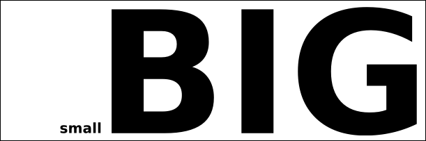
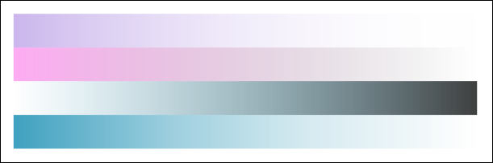
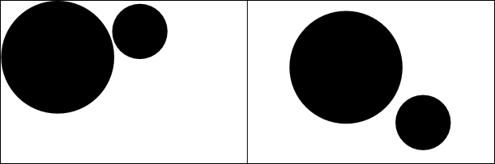
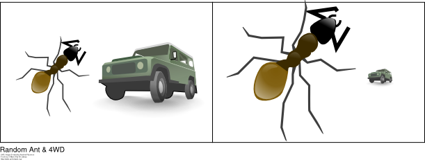

This course is an introduction to creation of multimedia
works. It will focus on five parts: Photos, Graphics, Audio,
Video, and Websites. Because of the huge scope of these topics,
each one will only be covered in an introductory manner. The goal
of this course is to give the students enough of an introduction to the
topics, that they could go on and learn more advanced concepts on their
own.
Original Text in this document is Copyrighted 2010 by Thomas Kent. Significant portions of this document were created by other people and used under various Creative Commons and Open Source licenses. See the references section at the end for attribution.
This document is freely available under a Creative Commons Attribution-ShareAlike 3.0 license.
http://creativecommons.org/licenses/by-sa/3.0/
This material was originally developed for the Instituto San Jose Sebastian Pelczar in Montero, Bolivia for a course covering an introduction to multimedia design. The original course was in Spanish, but as the teacher was a native English speaker, the materials were first prepared in English, then translated to Spanish.
Throughout this course, we will attempt to use, where possible, Free
and Open Source software. Free or Open Source (the terms are
often used interchangeably) software is software that is distributed
under a specific license that allows others to examine, modify, and
distribute without having to ask additional permission of the original
author. This keeps any one company from controlling the software,
and allows huge communities of participants to work together, adding
important features that make the software useful for themselves and
others. Because this software is open to the community, it is
also almost always distributed without monetary cost. All the
free software used in this course can be freely downloaded from various
websites.
That said, this course is primarily about the multimedia aspects,
not the software aspects. As such, we will also be covering the
use of non-free (proprietary) tools. The general method used in
this course is to learn the basics of each topic using the open source
tools, then once a basic understanding of the topic is had, the course
will briefly spend time learning how to apply those concepts in the
proprietary tools for that topic.
Open Source tools we'll be using. Hover over the Icon to read
a short description, click the icon to go to the tool's website.
In addition, for some of this class, we will be running computers that use the Ubuntu Operating System, instead of Microsoft Windows. Ubuntu is an open source replacement for Microsoft Windows. However, it also does much more than Windows, as it comes by default with much more software, such as many of the tools above, and almost all Free/Open Source software can be installed in it simply by searching in the "Software Center" and clicking install.

Other interesting open source tools:
More can be found online about free/open source software:
Open Source Initiative - http://www.opensource.org/docs/osd
Free Software Foundation - http://www.fsf.org/about/what-is-free-software
Wikipedia Free Software - http://en.wikipedia.org/wiki/Free_software
Wikipedia Open Source - http://en.wikipedia.org/wiki/Open_source
References for Spanish Doc
http://es.wikipedia.org/wiki/Archivo:Mapa_conceptual_del_software_libre.svg
http://es.wikipedia.org/wiki/Software_libre
Because all of the tools we will be using in this course are written and primarily used by English speaking people, many important resources in print and on the Internet are only available in English. For this reason, we will make a concerted effort to teach the english vocabulary for these tools along side the spanish as we go through the course.
We will be using US format numbers throughout this document, as they
are what is generally used in the external documentation that this is
based upon. Commas represent thousands, millions, billions,
etc. Periods represent decimal numbers.
One Thousand (10^3 - ten to the power of three) = 1,000
One Million (10^6) = 1,000,000
One Tenth (1/10) = 0.1
One Quarter (1/4) = 0.25
In computer terminology the basic unit of data is the bit. It is
either a 1 or a 0, and enough bits put together can represent any
data in the computer.
Everything is represented in terms of bits, which are
either 0 or 1, so if you have two bits there are 2^2 (two to the power
of
two) possible combinations: 00, 01, 10, 11. Three bits is 2^3
with possible combinations: 000, 001, 010, 011, 100, 101, 110,
111. Four bits has 2^4 possible combinations, Eight bits has 2^8
and on up. This is called "binary notation" where there are only
two digits (0 and 1) as opposed to decimal noation which has ten digits
(0, 1, 2, 3, 4, 5, 6, 7, 8, 9).
A byte is a collection of bits, 8 bits to be precise (0000000, 00000001, 01110101, and 11111111 are some of the 256 possible combinations). This is the standard unit that will be used to say how much space a piece of data takes up. (e.g. that text file is 300 Bytes large, that picture is 2 million bytes, etc)
Because computers can use HUGE numbers of bytes for different things, we have a set of prefixes that we use to talk about groups of bytes:
1 Byte
100 Bytes
1,000 Bytes = 1 Kilo Byte (KB)
1,000,000 Bytes = 1,000 KB = 1 Mega Byte (MB)
1,000,000,000 Bytes = 1,000 MB = 1 Giga Byte (GB)
1,000,000,000,000 Bytes = 1,000 GB = 1 Tera Byte (TB)
1,000,000,000,000,000 Bytes = 1,000 TB = 1 Peta Byte (PB)
It is important to note, when you are referring to the computers Hard Disk (HD), Random Access Memory (RAM), or Network Connection, all the numbers are stored and displayed by the computer are in binary format, not decimal format. This includes the size of files. It just so happens a KB, that is 2^10, is approximately equal to 1,000 in decimal notation (actually it is 1024) and a MB, 2^20 is approximately equal to 1,000,000 (actually 1,048,576). Although for our human heads, its generally easy to think in the simple powers of ten, just remember that these are not exact!
For more info see: http://en.wikipedia.org/wiki/File_size
and http://en.wikipedia.org/wiki/Byte
| Attribution (by) | Licensees may copy, distribute, display and perform the work and make derivative works based on it only if they give the author or licensor the credits in the manner specified by these. | |
| Noncommercial (nc) | Licensees may copy, distribute, display, and perform the work and make derivative works based on it only for noncommercial purposes. | |
| No Derivative Works (nd) | Licensees may copy, distribute, display and perform only verbatim copies of the work, not derivative works based on it. | |
| Share-alike (sa) | Licensees may distribute derivative works only under a license identical to the license that governs the original work. (See also copyleft.) |
The program we will be using for vector graphics, Inkscape, comes
with a great overview of some of the design elements we'll be using
throughout this course. Utilizing its license for re-distribution, it
has been copied below and is also available from the program by
clicking Help -> Tutorials -> Elements of Design.
The following elements are the building blocks of design.
A line is defined as a mark with length and direction, created by a point that moves across a surface. A line can vary in length, width, direction, curvature, and color. Line can be two-dimensional (a pencil line on paper), or implied three-dimensional.

A flat figure, shape is created when actual or implied lines meet to surround a space. A change in color or shading can define a shape. Shapes can be divided into several types: geometric (square, triangle, circle) and organic (irregular in outline).

This refers to variations in the proportions of objects, lines or shapes. There is a variation of sizes in objects either real or imagined.
Space is the empty or open area between, around, above, below, or within objects. Shapes and forms are made by the space around and within them. Space is often called three-dimensional or two- dimensional. Positive space is filled by a shape or form. Negative space surrounds a shape or form.

Color is the perceived character of a surface according to the wavelength of light reflected from it. Color has three dimensions: HUE (another word for color, indicated by its name such as red or yellow), VALUE (its lightness or darkness), INTENSITY (its brightness or dullness).

Texture is the way a surface feels (actual texture) or how it may look (implied texture). Textures are described by word such as rough, silky, or pebbly.

Value is how dark or how light something looks. We achieve value changes in color by adding black or white to the color. Chiaroscuro uses value in drawing by dramatically contrasting lights and darks in a composition.
The principles use the elements of design to create a composition.
Balance is a feeling of visual equality in shape, form, value, color, etc. Balance can be symmetrical or evenly balanced or asymmetrical and un-evenly balanced. Objects, values, colors, textures, shapes, forms, etc., can be used in creating a balance in a composition.
Contrast is the juxtaposition of opposing elements
Emphasis is used to make certain parts of their artwork stand out and grab your attention. The center of interest or focal point is the place a work draws your eye to first.

Proportion describes the size, location or amount of one thing compared to another.
Pattern is created by repeating an element (line, shape or color) over and over again.

Gradation of size and direction produce linear perspective. Gradation of color from warm to cool and tone from dark to light produce aerial perspective. Gradation can add interest and movement to a shape. A gradation from dark to light will cause the eye to move along a shape.

The combining of distinct elements to form a whole.

This is a partial bibliography used to build this document.
Special thanks to Linda Kim (http://www.redlucite.org) for helping Jon Phillips (http://www.rejon.org/) with this tutorial. Also, thanks to the Open Clip Art Library (http://www.openclipart.org/) and the graphics people have submitted to that project.
Gimp Icon, The GIMP's art/developer
team, http://commons.wikimedia.org/wiki/File:The_GIMP_icon_-_gnome.svg,
GPL
Inkscape Icon, CyberSkull et al.,
http://commons.wikimedia.org/wiki/File:Inkscape_OS_X.png,
GPL
Scribus Icon, Portablejim et al.,
http://commons.wikimedia.org/wiki/File:Scribus_logo.svg,
GPL
Audacity Icon, CyberSkull et al.,
http://commons.wikimedia.org/wiki/File:Audacity.png,
GPL
VLC Icon, Fornax,
http://commons.wikimedia.org/wiki/File:VLC_Icon.svg,
GNU FDL
HandBrake Icon, JR98644 et al.,
http://commons.wikimedia.org/wiki/File:HandBrake.png,
GPL
Kdenlive Icon, Alberto Villa et al.,
http://commons.wikimedia.org/wiki/File:Logo-kdenlive.png,
GPL
Kompozer Icon, Alain and Aubin Lorieux, Joaquín Herrera et al., http://commons.wikimedia.org/wiki/File:KompoZerLogo.svg,
LGPL
Bluefish Icon, Bluefish Project,
http://commons.wikimedia.org/wiki/File:Bluefish-icon.svg,
GPL
Ubuntu Icon, Canonical Ltd.,
http://commons.wikimedia.org/wiki/File:UbuntuCoF.svg,
Public Domain
Creative Commons License Graphic, Wikipedia Community, http://en.wikipedia.org/wiki/Creative_Commons_licenses,
CC-BY-SA
Inkscape Design Elements, Inkscape Community and Jon Phillips, http://inkscape.org/doc/elements/tutorial-elements.html,
GPL


, Spreadsheet (.xls), Presentation (.ppt)")
{kind=link}
{kind=link}
{kind=link}
{kind=link}
{kind=link}
{kind=link}
{kind=link}
{kind=link}
{kind=link}
{kind=link}
{kind=link}